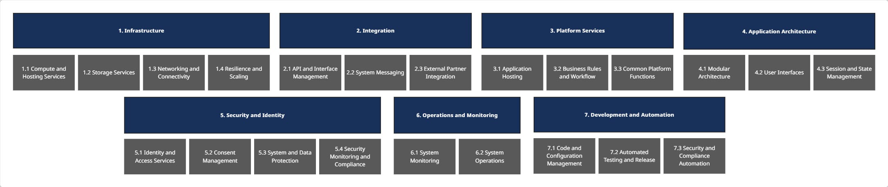

About
MITA TA Capability Model

Placeholder content
TA Domain Area Descriptions
| 1 | Infrastructure | The core technology environment that Medicaid systems run on - including cloud, servers, storage, and connectivity. |
|---|---|---|
| 1.1 | Compute and Hosting | Provides the servers, containers, and cloud platforms where Medicaid systems and applications run. |
| 1.2 | Storage | Manages where Medicaid data lives, including files, backups, and archives, ensuring information is secure, accessible, and retained according to state and federal laws. |
| 1.3 | Networking and Connectivity | Enables secure connections between internal systems, external partners, and cloud enivronments, ensuring fast, reliable communication between components. |
| 1.4 | Resilience and Scaling | It helps systems stay online and responsive during outages or emergencies, including failover mechanisms, load balancing, and disaster recovery capabilities. The ability to scale up and scale down during peak demand, usage, and traffic spikes. |
| 2 | Integration | How Medicaid systems, modules, and external partners securely share data and coordinate actions. |
| 2.1 | API and Interface Management | Managed the digital entry points that allow systems to exchange data using common formats like FHIR, X12, or REST, supporting modular design and partner interoperability. |
| 2.2 | System Messaging | Enables real-time or scheduled communication between systems, such as sending alerts, in a consistent and traceable way. |
| 2.3 | External Partner Integration | Supports secure, governed connectivity with MCOs, Providers, CMS, and other state/federal partners, critical for Medicaid coordination. |
| 3 | Platform Services | Shared technology services that support core Medicaid functions and are reused across modules. |
| 3.1 | Application Hosting | Provides managed environments for running Medicaid applications, such as platforms for APIs, microservices, or background tasks, while reducing manual overhead. |
| 3.2 | Business Rules and Workflow | Lets business or IT teams define rules (e.g., eligibility logic) and automate multi-step processes (e.g., Provider Enrollment) without needing to hard-code logic. |
| 3.3 | Common Platform Functions | Offers reusable tools, such as notification engines, address verification, or file upload services, that multiple systems can use instead of rebuilding the same features. |
| 4 | Application Architecture | The structure of Medicaid software and how people interact with it. |
| 4.1 | Modular Architecture | Breaks large Medicaid systems into smaller, independent components that are easier to scale and replace. |
| 4.2 | User Interfaces | Designs the screens, portals, and mobile views that users interact with, including members and providers, while ensuring accessibility and consistency. |
| 4.3 | Session and State Management | Keeps track of what a user is doing during a session, so they can resume or complete actions reliably and securely. |
| 5 | Security and Identity | How systems and data are protected, and how users and systems are granted access. |
| 5.1 | Identity and Access Services | Controls who can log in, what they can do, and how their identity is verified. |
| 5.2 | Consent Management | Capture, store, and enforce member consents and data-sharing preferences. |
| 5.3 | System and Data Protection | Applies safeguards like encryption, firewalling, and secure system configurations to prevent unauthorized access and protect sensitive Medicaid and healthcare data. |
| 5.4 | Security Monitoring | Watches for unusual activity, logs what is happening, and supports audits. Helps State Medicaid Agencies meet CMS and NIST security standards (e.g., MARS-E). |
| 6 | Operations and Monitoring | How Medicaid systems are monitored, managed, and kept running smoothly. |
| 6.1 | System Monitoring | Tracks system health, such as uptime, performance, and availability, through dashboards, alerts, and automated checks to catch problems early. |
| 6.2 | System Operations | Provides centralized tools that staff use to manage systems, schedule jobs, deploy updates, and monitor activity across environments. |
| 7 | Development and Release | How software and infrastructure are built, tested, released, and secure. |
| 7.1 | Code and Configuration Management | Allows teams to safely write, track, and manage software changes, and define infrastructure settings as code to reduce errors and improve consistency. |
| 7.2 | Testing and Release | Runs tests to catch bugs, and moves code through environments (e.g., Development, Test, Production) using pipelines that reduce manual steps. |
| 7.3 | Security Compliance | Builds in security checks and compliance rules at every step of development, ensuring that code is safe and standards are met before going live. |